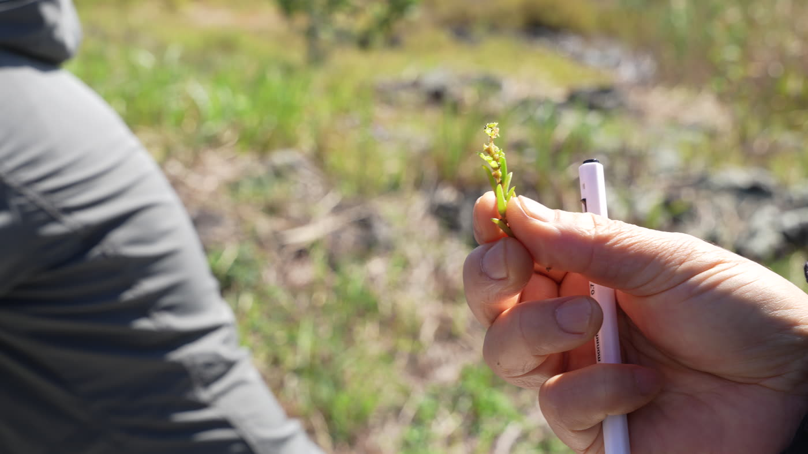
해홍나물
퉁퉁마디와 닮았지만 다른 식물. 가을이 깊어지면 붉게 변해 갑니다.
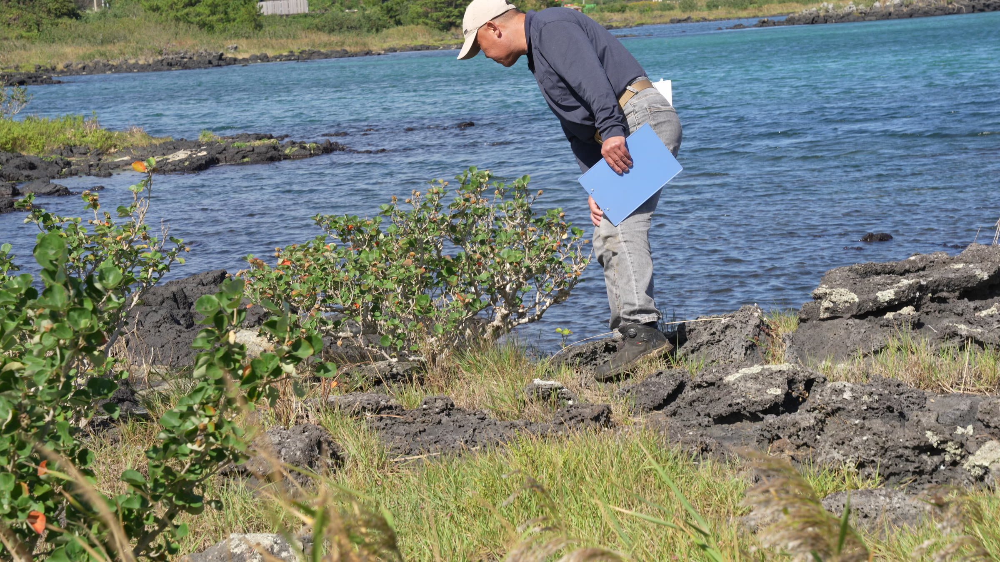
성산 오조리 내수면 · 염생식물 체험
바닷물이 드나드는 오조리 내수면의 바위와 풀밭에서, 짠물을 견디며 사는 식물들을 찾아 나섰습니다.
VIDEO
9분 16초 · 강사와 참여자의 목소리를 살려 촬영 순서대로 엮었습니다.
PROGRAM
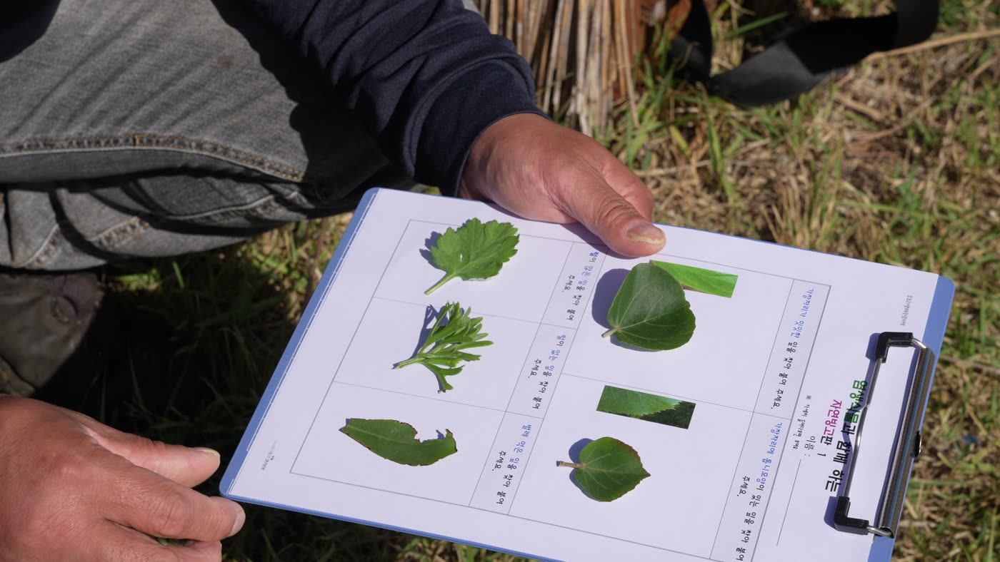
5분 안에 빙고판의 잎을 찾아 붙이는 게임으로 시작했습니다. 가장자리에 톱니가 있는 잎, 털 없는 잎, 벌레 먹은 잎. 이름을 몰라도 괜찮고, 모양만 보면 됩니다.
“한 번 만져 봐야 털이 있는지 없는지 알아요”
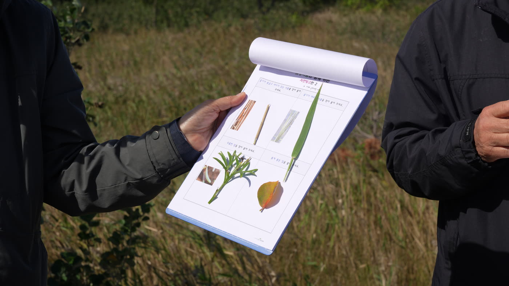
톱니가 있느냐 밋밋하냐, 털이 있느냐 없느냐가 식물을 나누는 특징입니다. 빙고판 두 번째 판은 염생식물 — 마디가 있는 갈대 닮은 식물, 줄기가 세모진 천일사초.
“줄기가 세모진 식물은 천일사초를 말하는 거였어요”
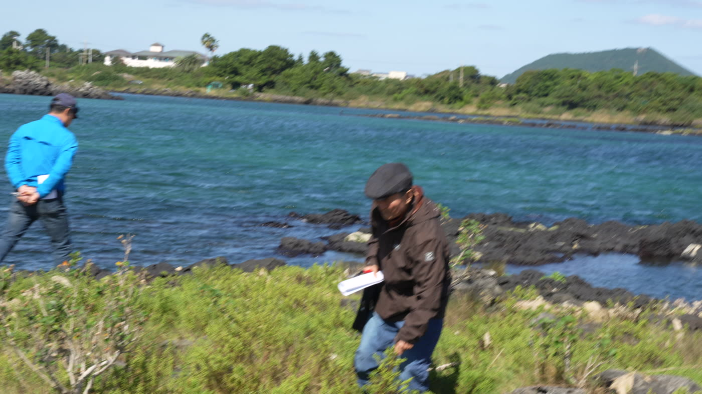
두 사람씩 짝을 지어 봉투와 가위를 받아 들고, 내수면 바닷가 바위와 풀밭에서 궁금한 식물을 10분 동안 모았습니다.
“가능하면 아까 자료에 있던 염생식물로 채집해 오세요”
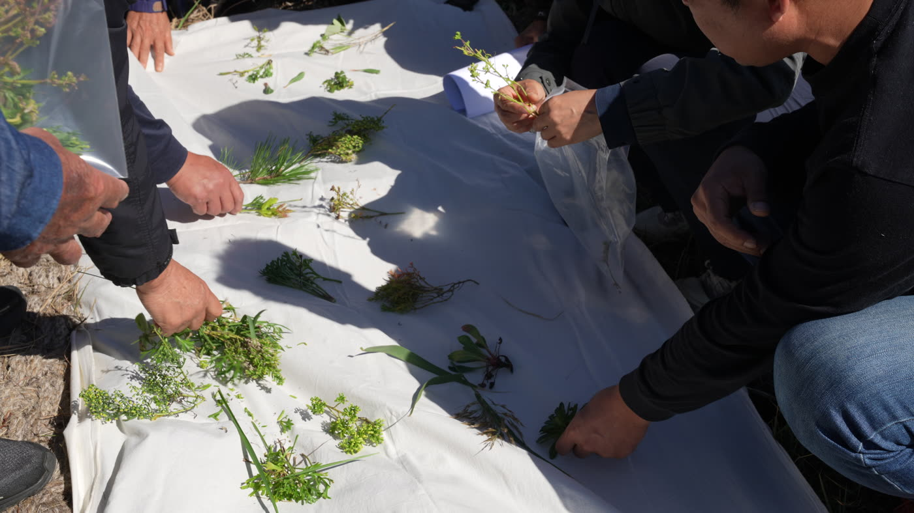
모은 식물을 하얀 천에 펼쳐 같은 것끼리 짝을 짓고, 잎을 비벼 향을 맡았습니다. 식물이 향을 가진 건 먹히지 않으려고 가진 것입니다.
“조금 있으니까 짭짤한 맛이 나네”
PLANTS
강사님이 현장에서 들려준 설명을 옮겼습니다.

퉁퉁마디와 닮았지만 다른 식물. 가을이 깊어지면 붉게 변해 갑니다.
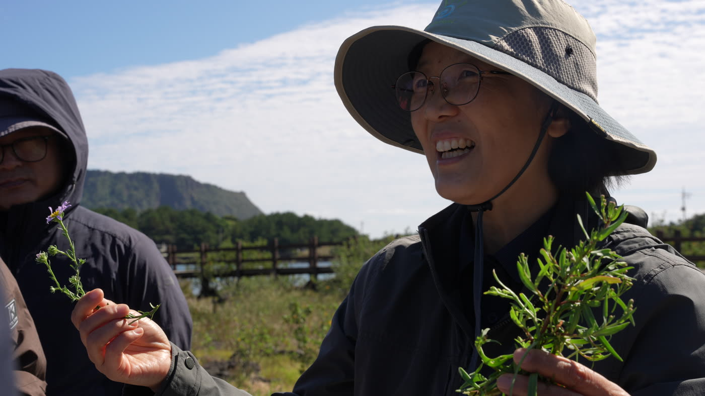
하나는 물 가까이, 하나는 좀 더 육지 쪽에 삽니다. 보라색 꽃이 50원·100원 동전만 하면 갯개미취, 500원 동전보다 크면 갯쑥부쟁이.
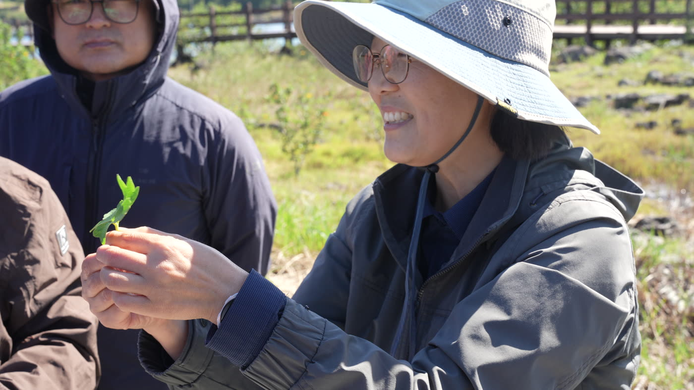
흔히 방풍나물이라 부르는 바닷가 나물. “이거 엄청 맛있어요.”
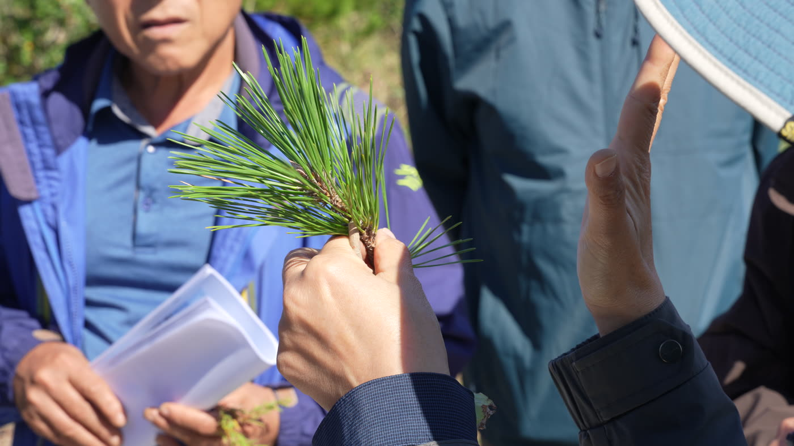
잎이 두 장씩 나면 소나무, 다섯 장이면 잣나무. 소나무 중에서도 바닷가에 사는 것이 곰솔입니다.
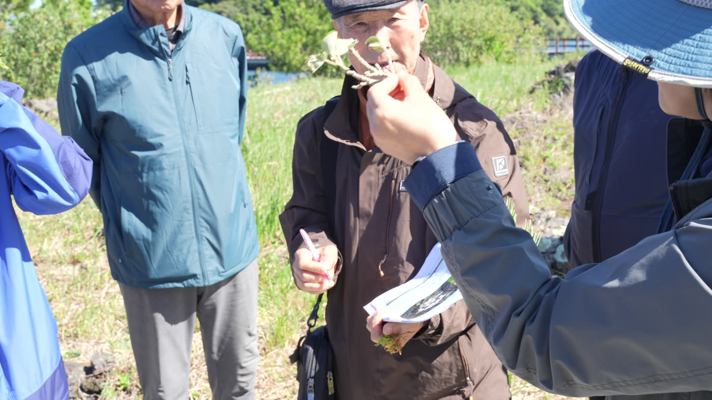
노란 꽃이 피는 우리나라 자생 무궁화. 바닷가에서 자랍니다.
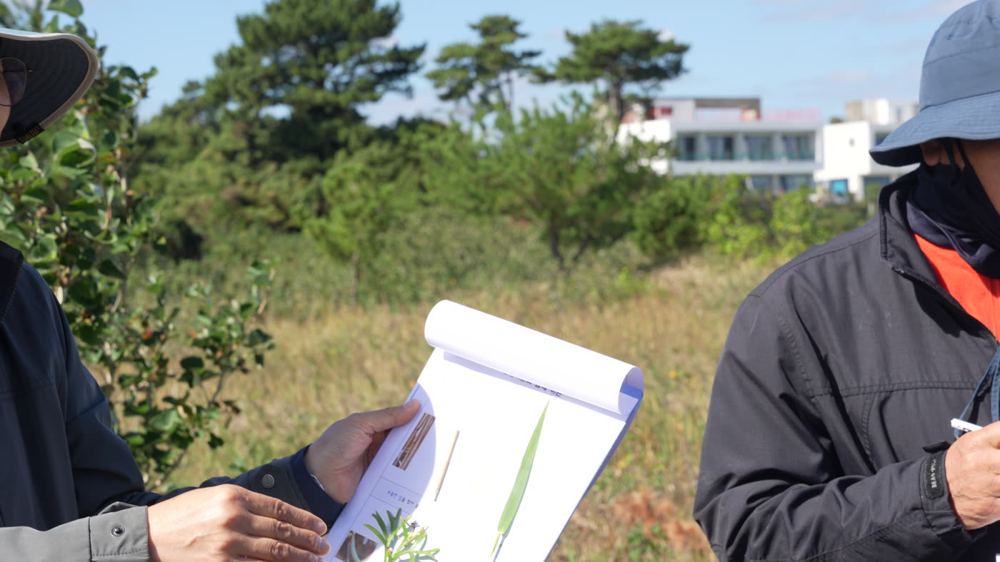
줄기를 잘라 보면 세모난 사초. 빙고판에서 가장 찾기 어려웠던 식물입니다.
VOICES
현장에서 직접 보니까 새로운 것들을 배웠습니다. 사진으로만 보면 몰라요.— 참여자
100년, 200년 동안 몸 안에 탄소를 차곡차곡 모아 두는 거예요.— 여러해살이 바닷가 식물에 대해, 강사
산에 있으면 소나무, 바닷가에 있으면 곰솔.— 참여자
TOGETHER
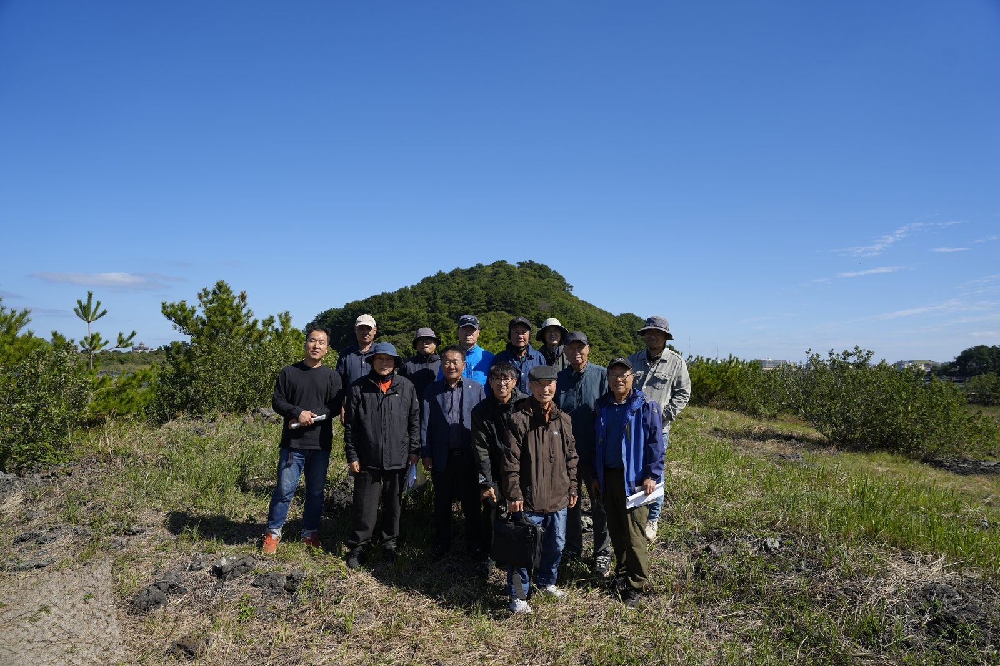
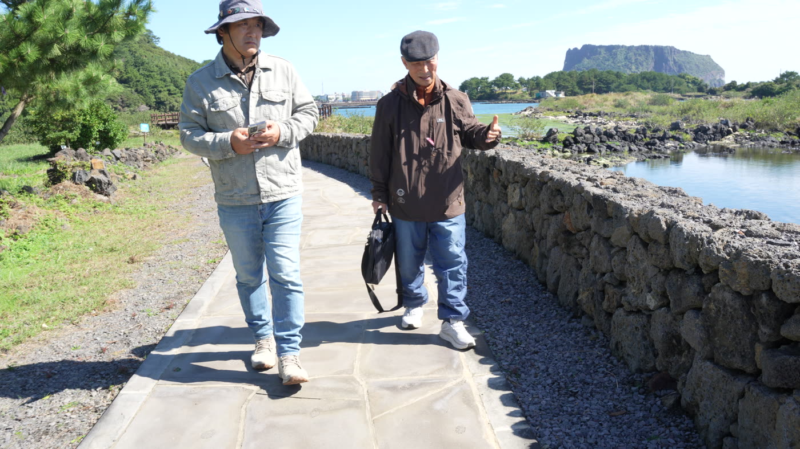
PLACE
성산일출봉을 마주한 오조리 마을 앞, 바닷물이 드나드는 너른 물가입니다. 돌담 둑길을 따라 걸으면 소금기 머금은 풀밭과 바위틈에 염생식물이 자랍니다.
제주특별자치도 서귀포시 성산읍 오조리